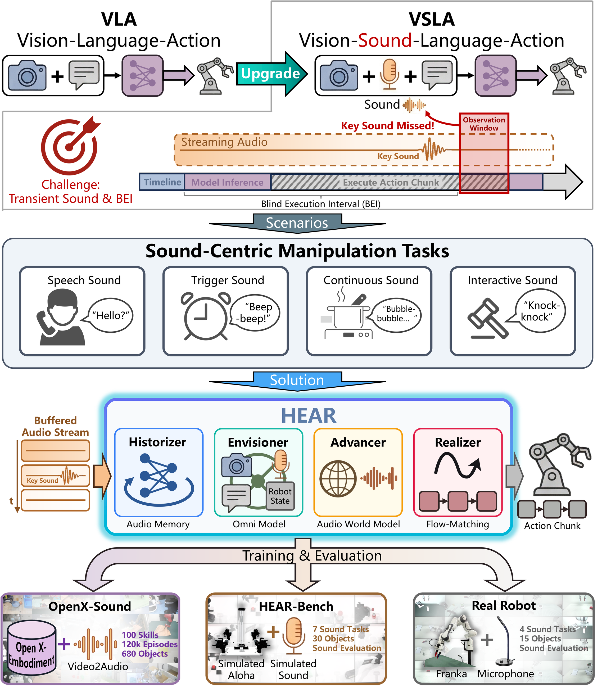

From VLA to VSLA
Modern Vision-Language-Action policies have shown that large multimodal models can map images, language, and robot state directly to action. This works well when task-relevant evidence is visually persistent. A cup stays on the table, a drawer remains open, and the camera can observe those facts over many control cycles. Recent systems have started to add audio, but in most cases sound is still treated as an episodic input before action or as a channel mainly for speech understanding.
Sound-centric manipulation is different. Here the critical evidence may be a brief beep, a collision click, a subtle change in boiling sound, or the prosody of a spoken confirmation. These cues are often short, non-repeatable, and only meaningful if the robot listens at the right moment during execution. The problem is not just adding one more modality, but dealing with the fact that audio is distributed over time very differently from vision.
Existing ways of attaching sound to VLA are often too static for this setting. Automatic speech recognition throws away non-speech cues and prosody, while waveform-as-image adapters flatten a temporal signal into a single visual snapshot. Both approaches become brittle when the cue is brief, when the cue happens between two policy queries, or when the task depends on how sound evolves rather than on one isolated event.
This is exactly where modern action chunking becomes a problem. Large policies often predict a chunk of actions and execute it open-loop to keep motion smooth. During that interval, new observations cannot change the current command sequence. For sound-centric tasks, this creates a structural blind spot: a short cue can happen and vanish before the next decision ever sees it. We refer to this as the Blind Execution Interval.
These limitations motivate the Vision-Sound-Language-Action paradigm. VSLA extends VLA from “see and act” to “see, hear, remember, and react” under delayed asynchronous control. In this paper we instantiate that paradigm with HEAR, and we accompany it with a pretraining dataset and a sound-causal benchmark so that the whole pipeline can be trained and evaluated consistently.

HEAR reframes manipulation from a vision-dominant setting into a sound-causal one: the policy must preserve fleeting acoustic evidence, reason over multi-sensory context, and only act after the right sound condition has actually occurred.